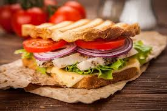

CHICKEN SANDWICH

How To Build The Perfect Chicken Sandwich
The perfect chicken sandwich recipe isn’t necessarily about any specific ingredients. Rather, it’s about the quality of those ingredients
and the proportions.
Ingredients
- Mozzarella cheese
- Fresh herbs & greens
- Bread
- Chicken
Steps
- Prepare the chicken: Thinly slice 1 ½ pounds of boneless, skinless chicken breast into cutlets (or, to serve them whole, pound them flat).
- Next up, the aioli: Prepare the aioli according to our favorite aioli recipe. Once all of the oil is emulsified, add 1 tablespoon of minced sun dried tomatoes (I like to scrape in any oil here as well).
- Set up your station: Line up your fixings. Drain a jar of roasted red peppers and marinated artichoke hearts.
- Start building: Spread the aioli on one or both slices of the bread and begin layering. Add the chicken, followed by the peppers, artichokes, olives, and cheese.